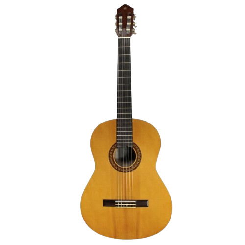

Escolha seu instrumento preferido!

Violão Clássico
Descrição
Violão de Aço
Descrição
Violão de 7 Cordas
Descrição
Violão Elétrico
Descrição
Guitarra Telecaster
Descrição
Guitarra Les Paul
Descrição
Guitarra StratoCaster
Descrição
Guitarra Fly V
Descrição
Votação de violões
Votação de guitarras